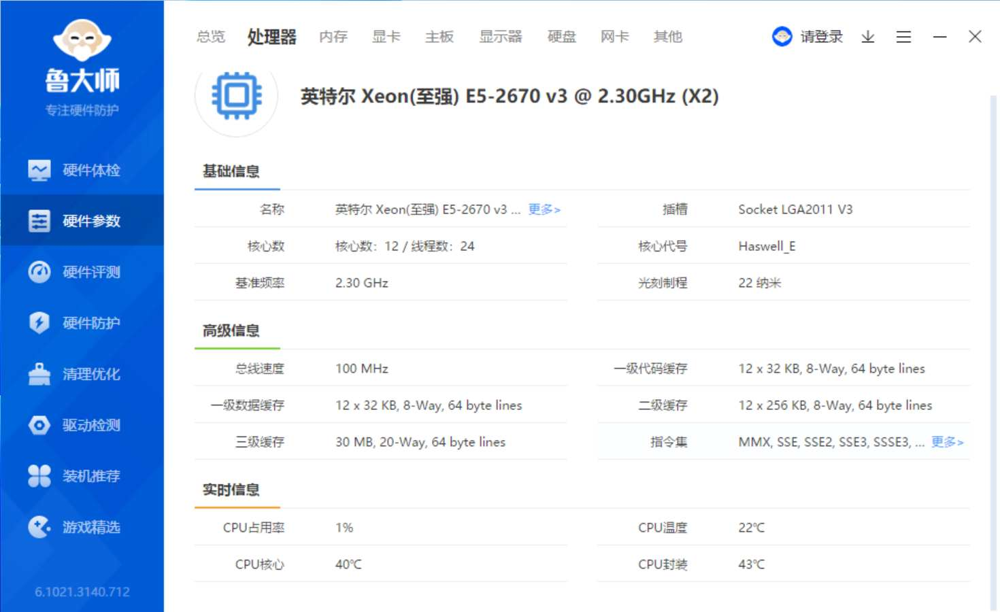
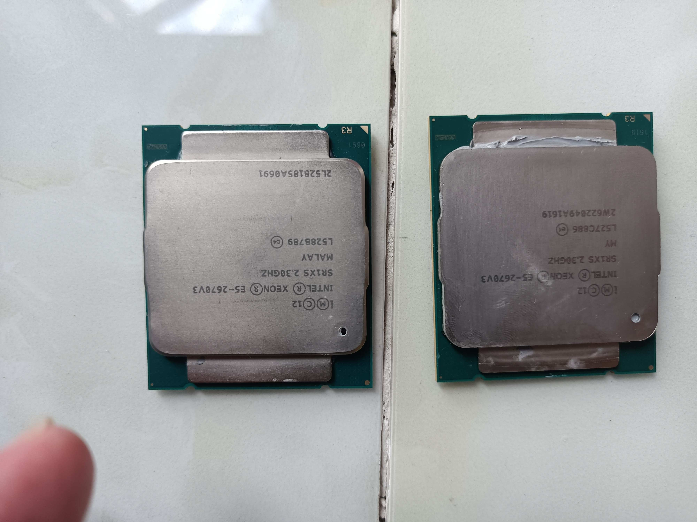
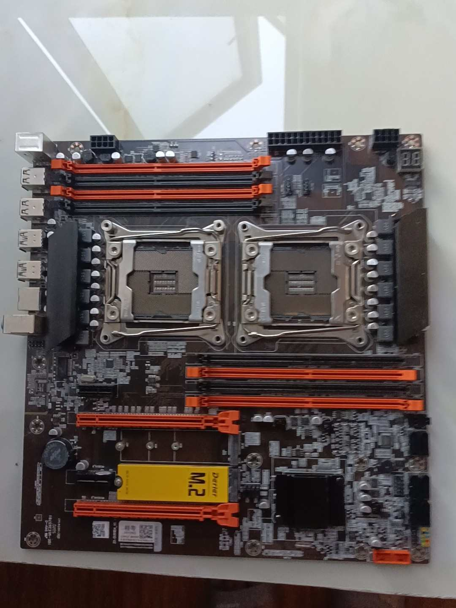
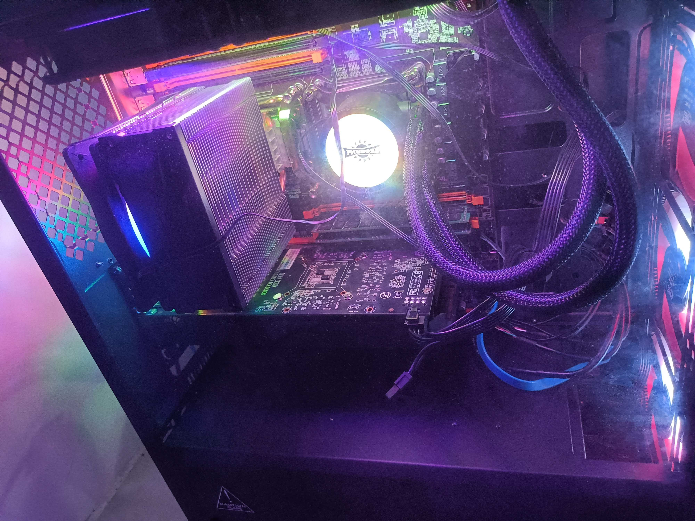
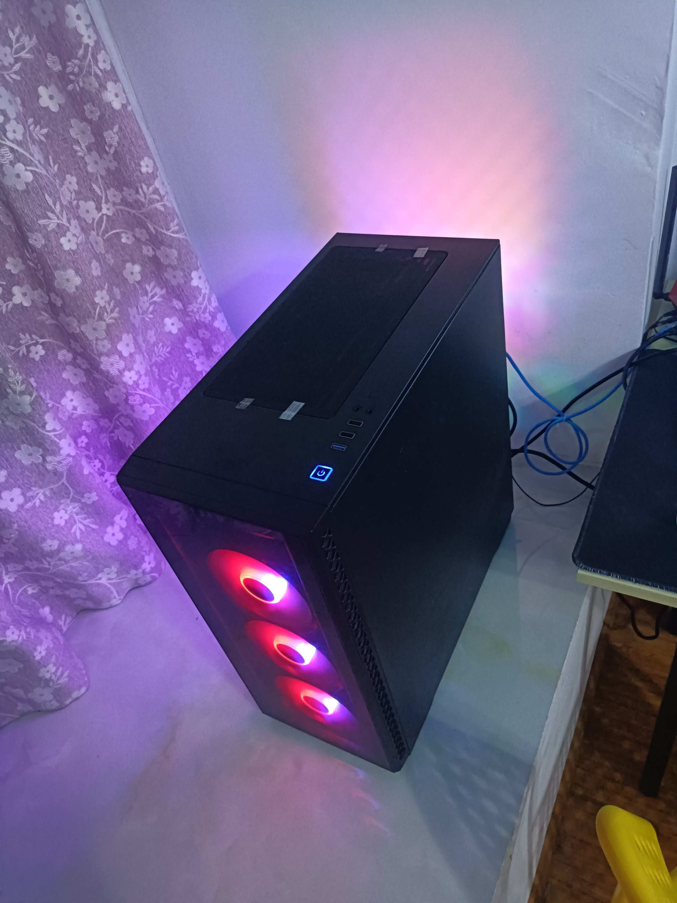

买卖洋垃圾-E5装机
- 作者:
- 淡白
- 创建时间：
- 2021-09-11 14:21:24
- 装机 上了大逼当 e5
摘要：本文介绍了作者在今年4月份购买的一台多核CPU电脑的配置，并附上了各个配件的购买渠道和价格。然后作者提到由于电脑发热严重，经过了6、7月份的炎热天气后，作者决定拆卸并出售了部分配件，列出了出售价格和亏损金额。最后作者总结了装机需要耐心，不应购买低质量产品，并提到了发热和耗电问题。
装机
在今年4月份时萌生了装一台多核cpu的电脑。于是在淘宝和京东分别购买了以下配置。
配件
| 部件 | 产品名称 | 买入渠道 | 价格 |
|---|---|---|---|
| CPU | E5 2670V3 *2 | 淘宝 | 770 |
| CPU风扇1 | 弗博思静音x99 水冷散热 | 淘宝 | 239 |
| 内存1 | 镁光ddr4 16G | 淘宝 | 305 |
| 内存2 | 镁光ddr4 16G | JD | 459 |
| 硬盘 | 阿斯加特500G M.2固态 | JD | 389 |
| 机箱 | 九州风神玄冰50 | JD | 249 |
| 电源 | 鑫谷额定750w金牌 | JD | 499 |
| 主板 | 精粤x99双路主板 | JD | 697 |
| CPU风扇2 | 超频三东海x4s | JD | 83 |
| 显卡 | 盈通GT730 | JD | 378 |
总共合计4068元
图集





卖出
在历经6、7月的炙烤下我实在忍不了了。这机子放在旁边一玩个游戏温度直接起飞旁边就像有个熔炉一样。于是我就把它拆了卖了，留下机箱、电源、显卡、风扇硬盘。
现在看着购入时的价格，我真是个大傻逼。
在海鲜市场出卖价格如下
| 部件 | 价格 | 亏损 |
|---|---|---|
| CPU*2 | 480 | 290 |
| 内存*2 | 400 | 356 |
| 主板 | 400 | 297 |
总结
装机不能心急，不然可能损失惨重。
不要再去搞洋垃圾了越来越不值钱。
发热严重还耗电，血亏。
框框多是真的。